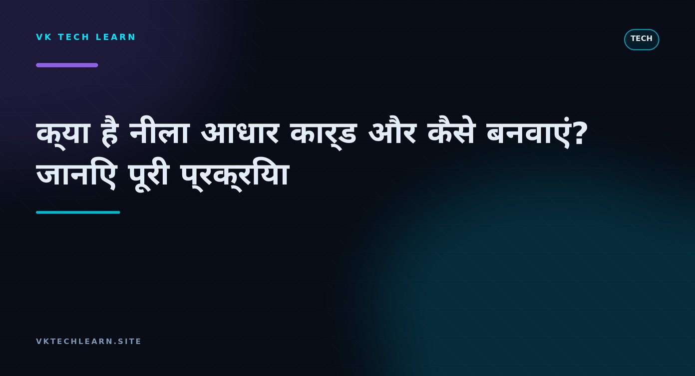

क्या है नीला आधार कार्ड और कैसे बनवाएं? जानिए पूरी प्रक्रिया
5 साल से कम उम्र के बच्चों के लिए 'नीला आधार कार्ड' कैसे बनवाएं?
आधार कार्ड आज हर भारतीय नागरिक के लिए एक महत्वपूर्ण पहचान दस्तावेज बन गया है। अब यह छोटे बच्चों के लिए भी जरूरी हो गया है। UIDAI ने 5 साल से कम उम्र के बच्चों के लिए एक विशेष ‘नीला आधार कार्ड’ (बाल आधार) शुरू किया है।

क्या है नीला आधार कार्ड (Blue Aadhaar Card)?
- बाल आधार बच्चों के लिए जारी किया गया नीले रंग का आधार कार्ड है।
- यह 12 अंकों की विशिष्ट पहचान संख्या के साथ आता है।
- 5 साल से कम उम्र के बच्चों के लिए बायोमेट्रिक डेटा की आवश्यकता नहीं होती।
- यह माता या पिता के आधार कार्ड से लिंक होता है।
- 5 वर्ष की आयु तक यह वैध रहता है, उसके बाद बायोमेट्रिक अपडेट अनिवार्य है।
- पंजीकरण पूरी तरह नि:शुल्क है।
क्यों जरूरी है बाल आधार?
- यह बच्चों के लिए वैध पहचान प्रमाण है।
- सरकारी योजनाओं और सेवाओं का लाभ उठाने में सहायक है।
- स्कूल प्रवेश के समय इसकी आवश्यकता हो सकती है।
- हवाई और रेल यात्रा के दौरान पहचान के लिए भी उपयोगी है।
बाल आधार कार्ड कैसे बनवाएं: स्टेप-बाय-स्टेप गाइड
आवश्यक दस्तावेज़:
- बच्चे का जन्म प्रमाण पत्र
- माता या पिता में से किसी एक का आधार कार्ड
- पता प्रमाण (जैसे राशन कार्ड, बिजली बिल आदि)
आवेदन प्रक्रिया:
- नजदीकी आधार नामांकन केंद्र पर जाएं।
- वहां ‘बाल आधार’ के लिए आवेदन फॉर्म भरें।
- जरूरी दस्तावेज जमा करें।
- बच्चे की फोटो ली जाएगी (बायोमेट्रिक नहीं)।
- माता या पिता का बायोमेट्रिक सत्यापन होगा।
- आपको एक Acknowledgement Slip मिलेगा जिससे आप स्टेटस ट्रैक कर सकते हैं।
- 90 दिनों में ‘बाल आधार’ आपके पते पर पोस्ट से आ जाएगा या आप इसे ऑनलाइन डाउनलोड कर सकते हैं।
कुछ जरूरी बातें जो ध्यान रखें:
- UIDAI की वेबसाइट से ऑनलाइन अपॉइंटमेंट बुक किया जा सकता है।
- 5 और 15 साल की उम्र में बायोमेट्रिक अपडेट अनिवार्य है।
- UIDAI SMS या ईमेल के माध्यम से अपडेट की याद दिलाता है।
‘बाल आधार’ बच्चों के लिए एक मजबूत पहचान का आधार बनाता है, जिससे वे कम उम्र में भी सेवाओं और योजनाओं का लाभ उठा सकते हैं।
#बालआधार #BlueAadhaar #AadhaarForKids #UIDAI #बच्चोंकाआधार #AadhaarUpdate #आधारकार्ड #IndiaIDCard #DigitalIndia #बालपहचान